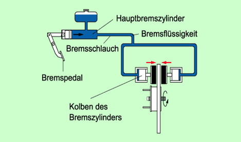

Übertragen Kräfte und Drehmomente zwischen zwei Wellen. Es ist eine Verbindung zwischen zwei Wellen. Man unterscheidet zwischen Schaltpaaren und nicht Schaltpaaren Kupplungen. Dabei kann es eine formschlüssige Kraftübertragung und eine kraftschlüssige Kraftübertragung sein. Die kraftschlüssige Kraftübertragung beruht dabei meist über das Prinzip der Reibung. Dabei werden die Kraft und das Drehmoment über die Reibung übertragen. Typische Reibungskupplungen wären: Scheibenkupplung oder die Schalenkupplung ohne Passfeder. Dabei wird die Kraft nur über die Reibung übertragen. Eine weitere Kupplung wäre die Einscheibentrockenkupplung. Dabei ist es wichtig, dass die Reibungsfläche sehr groß ist, weil desto mehr Fläche ist, desto mehr Kraft und Drehmoment kann übertragen werden. Deswegen haben Kupplungen, die auf das Prinzip der Reibung beruhen, meist einen großen Flansch. Im Bild sieht man eine Schraubenfederkupplung. Diese kann anders wie z.B eine Scheibenkupplung besonders gut Schwingungen ausgleichen weil zwischen den Schrauben sich Federn befinden. Im zweiten Bild sieht man eine Schalenkupplung. Die Kräfte werden dort zu 100% mit Reibung übertragen. Dabei hat sie den Vorteilen, mit einer sehr leichten Montage (in zwei Teilen). Reibungskupplungen profitieren von einer hohen Zusammenpresskraft, deswegen sollten die Schrauben bei z.B Schalenkupplung möglich stark angezogen werden.
Bremsen bei Fahrzeugen sind für die Betriebssicherheit unerlässlich. Je nach Bauart unterscheidet man zwischen Trommelbremsen und Scheibenbremsen. In beiden Fällen wird zur Abbremsung des Geräts die Gleitreibung verwendet. Die Gleitreibung wirkt zwischen dann zwischen speziellen Bremsbelägen und einer Bremstrommel bzw. Bremsscheibe. Beim Verringern der Geschwindigkeit entsteht, wegen der Umwandlung der mechanischen Energie, Wärme. Bremsen beruhen auf der Reibung und der Hydraulik. Die Bremskraft steigt, wenn das Bremspedal stärker gedrückt wird. Eigentlich wäre aber unsere Fuß kraft viel zu gering, um ein Auto zu bremsen. Deswegen beruhen Bremsen auf der Hydraulik. Mit der Hydraulik kann die Bremskraft erhöht werden. Bei höherer Anpresskraft den Bremsbelägen auf der z.B Bremstrommel entsteht eine höhere Reibungskraft und das Auto kommt schneller zum Stillstand. Zwischen Reifen und Straße ist es Vorteilhaft, wenn dort möglichst Haftreibung herrscht. Wenn das Bremspedal zu stark betätigt wird könnten die Reifen blockieren und das Auto würde über die Straße gleiten. Somit würde der Lenker keine Kontrolle mehr über das Fahrzeug haben und der Bremsweg wäre länger. Um das zu vermeiden, gibt es das ABS-System. Es verhindert das Blockieren der Reifen und die Lenkbarkeit des Fahrzeuges bleibt erhalten.
Trommelbremse:
Im Bild sieht man den Aufbau einer Trommelbremse. Die Bremsbacken drücken von innen gegen die Bremstrommel. Natürlich nur wenn die Bremse betätigt wurde. Es wirkt danach eine Gleitreibung zwischen den Bremsbacken und der Bremstrommel (die fest mit den Reifen verbunden ist).

Scheibenbremse:
Bei Betätigung der Bremse drücken die Bremsbeläge fest gegen die, fest am Reifen befestigte, Bremsscheibe. Damit wirkt zwischen Bremsbacken und Bremsscheibe eine Gleitreibungskraft, die das Abbremsen des Fahrzeuges bewirkt. Gut sichtbar sind Scheibenbremsen bei vielen Motorrädern.

Kommentare